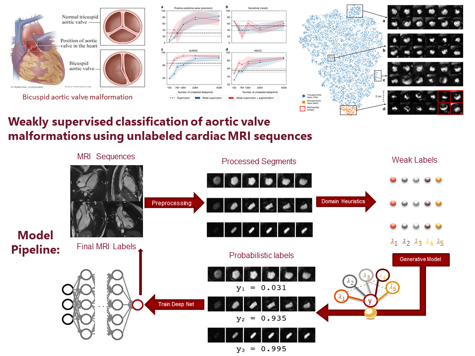
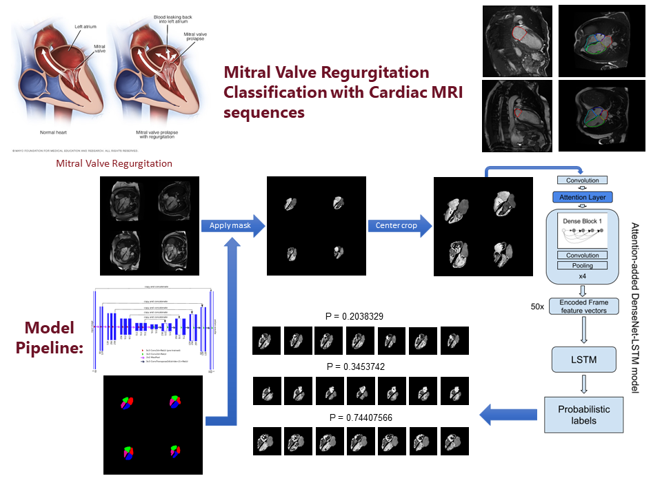

Ke Xiao
I am a 2nd year Ph.D student in the Information Fusion Lab of Computer Science Department at UMass Amherst, advised by Prof. Madalina Fiterau. My primary research interests resides in the field of Computer Vision, Machine Learning, Weak Supervision, Artificial Intelligence, and Robotics.
Currently I am doing machine learning research in healthcare with medical imaging datasets mostly from the UK Biobank. The project I am working on is classifying Mitral Regurgitation with mostly unlabeled cardiac MRI datasets from the UK Biobank. The pipeline consists of a multi-view CNN-LSTM classification model, a ensemble model trained with weak probabilistic labels generated with multiple heuristic functions, and a U-Net based segmentation model segmenting the cardiac MRI data for the CNN-LSTM classification model as well as for the heuristic functions.
Before coming to UMass, I was working on medical imaging computer vision research in the Priest Lab at Stanford University, supervised/advised by Dr. James R. Priest, Dr. Jason A. Fries, and Prof. Madalina Fiterau. We worked on a variety of research projects using cardiac MRI datasets, among which the work of Aortic Valve Malformation Classification was published at Nature Communications in 2019.
| CV | Gmail | UMass Email | Github | Google Scholar | InfoFusion |
Publications, Abstracts, and Presentations
| 2021 | High heritability of ascending aortic diameter and multi-ethnic prediction of thoracic aortic disease. C. Tcheandjieu, K. Xiao, H. Tejeda, J. Lynch, S. Ruotsalainen, T. Bellomo, M. Palnati, R. Judy, R. Kember, D. Klarin, S. Verma, A. Palotie, M. Daly, M. Ritchie, D. Rader, M. A Rivas, T. Assimes, P. Tsao, S. Damrauer, J. Priest. medRxiv, Nature Genetics. doi:10.1101/2020.05.29.20102335. |
| 2020 | Cardiac imaging of aortic valve area from 34,287 UK Biobank participants reveals novel genetic associations and shared genetic comorbidity with multiple disease phenotypes. A. Cordova-Palomera, C. Tcheandjieu, J. Fries, P. Varma, V. Chen, M. Fiterau, K. Xiao, H. Tejeda, B. Keavney, H. Cordell, Y. Tanigawa, G. Venkataraman, M. Rivas, C. Re, E. Ashley, J. R. Priest. Circulation: Genomic and Precision Medicine. |
| 2020 | Computational estimates of mitral annular diameter in systole and diastole cardiac cycle reveal novel genetic determinants of valve function and disease. M. Yu, C. Tcheandjieu, A. Georges, K. Xiao, H. Tejeda, C. Dina, T. Le Tourneau, M. Fiterau, R. Judy, N. Tsao, D. Amgalan, C. Munger, J. Engreitz, S. Damrauer, N. BouatiaNaji, J. Priest. medRxiv, doi:10.1101/2020.12.02.20242206. |
| 2019 | Multi-Resolution Weak Supervision for Sequential Data. F. Sala, P. Varma, J. Fries, D. Fu, S. Sagawa, S. Khattar, A. Ramamoorthy, K. Xiao, K. Fatahalian, J. Priest, C. Re. NIPS-2019. |
| 2019 | Polygenic architecture of computationally derived aortic diameter from 20,939 British adults predicts the risk for aortic aneurysm and dissection. C. Tcheandjieu, K. Xiao, H. Tejeda, E. Ingelsson, J. Fries, J. Priest. Abstract-ASHG 2019. |
| 2018 | Weakly supervised classification of aortic valve malformations using unlabeled cardiac MRI sequences J. Fries, P. Varma, V. Chen, K. Xiao, H. Tejeda, P. Saha, J. Dunnmon, H. Chubb, S. Maskatia, M. Fiterau, S. Delp, E. Ashley, C. Re, J. Priest. bioRxiv, Nature Communication 2018. |
| 2018 | Deep Learning of Cardiac Morphology from UK Biobank MRI Data Reveals Genome-wide Associations for Bicuspid Aortic Valve. A. Córdova-Palomera, J. Fries, P. Varma, M. Fiterau, K. Xiao, H. Tejeda, B. Keavney, H.Cordell, E. Ashley, J. Priest. Abstract-ASHG 2018. |
| 2017 | Data Augmentation for Aortic Valve Morphology Classification from Phase-Contrast MRI. K. Xiao, H. Tejeda, J. Priest, SP. Lee, J. Fries, M. Fiterau. ML4H-NIPS 2017. |
| 2017 | Automated Classification of Aortic Valve Morphology from Phase-Contrast Cardiac MRI Using an Augmented CNN. K. Xiao, H. Tejeda, J. Priest, SP. Lee, J. Fries, M. Fiterau. MED-NIPS 2017. |
Projects
Bicuspid Aortic Valve Malformation Classification with Weak Supervision |
|
| I worked on the project of detecting the bicuspid aortic valve malformation at Stanford. Normal aortic valve has three cuspids, and due to congenital conditions and unhealthy lifestyles, it could lead to a malformation of bicuspid valve. And if left undetected and untreated, it could lead to cardiac arrest or worse. The main difficulty in this project is that the condition has a prevalence of less than 2% in general population, and only about 6% in our dataset. On top of this, we are working with unlabeled datasets from the UK Biobank. We applied domain knowledge on processed segments to form noisy weak labels which is in turn used to train a deep neural network model (CNN-LSTM) to generate the final predictions. In the final classification results, we have a 61% improvement in F1 score (37.8 to 60.8), 171% improvement in precision (30.7 to 83.3), and model improves as we add more unlabeled data! | |
|  | |
Mitral Regurgitation Classification with Cardiac MRI Sequences |
|
| Mitral valve is the valve connecting the left atrium and left ventricle of the heart. Mitral valve regurgitation is the condition where the blood flows back from the left ventricle into the left atrium. And if left undetected and untreated, it will lead to severe complications including pulmonary edema, blood clots, stroke, heart failure. In the Mitral Valve Regurgitation classification pipeline, we employed a U-Net segmentation model and applied the masks to the raw MRI datasets, then feed the center-cropped, masked dataset into a discriminative deep neural network to get final probabilistic labels. | |
|  |
Other
Before I ventured into computer vision research, I worked on robotics research at Colorado School of Mines where I graduated with a Master's degree in Robotics, Automation, and Design from the Mechanical Engineering department. Even though my current research interests are focused on computer vision and weak supervision, I would still welcome the opportunity to research in an interdisciplinary area involving both computer vision and robotics.
Outside of the research lab, I like to spend my time in nature. I enjoy activities such as surfing, skydiving, scuba diving, hiking, road tripping, and more. And when I can not venture far, I like to swim, play guitar, practice yoga, etc.